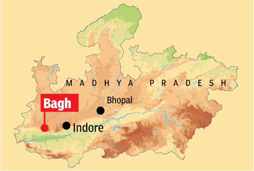

Bagh : The Blessed place
Bagh is a census town in dhar district in the state of Madhya Pradesh
About Bagh

Bagh is known for the Bagh Caves, which date back to the 4th-6th centuries and feature Buddhist rock-cut murals. Inscriptions found in 1982 suggest historical ties to the Maharajas of Valkha, indicating its ancient significance.
Top Attractions
Bagh Caves
The Bagh Caves, located in Madhya Pradesh, India, are a group of nine rock-cut Buddhist monuments dating back to the 5th-7th century AD. Renowned for their tempera mural paintings, especially in Cave 4 (the Rang Mahal), the caves serve as viharas (monastic rest areas). Of the original nine, only five remain. The caves were restored by the Archaeological Survey of India, and some paintings are now housed in the Gujari Mahal Museum.Read more
Bagheshwari Mandir
The Bagheshwari Devi temple in Dhar district, Madhya Pradesh, is revered as the family deity for 184 villages and has ties to King Mordhwaj and the Scindia family. Believed to date back 4,000-5,000 years, the temple features an original sanctum divided into nine sections. During Navratri, rituals are performed daily, and the goddess is worshipped in three forms. The temple gained further prominence after a golden kalash was installed in 1997.Read more
Rich Fossil
Bagh in Madhya Pradesh is known for its rich fossil deposits, particularly dinosaur fossils, and is considered a major site for dinosaur eggs. The Dinosaur Fossil National Park in Bagh was established in 2011 to protect and study these fossils. Fossils found in Bagh include those of herbivorous (Sauropod) and carnivorous (Abelisaurus) dinosaurs, as well as dinosaur eggs, shark teeth, and giant gymnospermsRead more
Bagh Print
Bagh print is a traditional Indian handicraft from the Bagh village in Madhya Pradesh, characterized by hand-printed wood block relief designs using natural dyes. Originating over 1,000 years ago, the process involves pre-washing, dyeing, and printing on various fabrics, often featuring geometric and floral motifs. Bagh prints are recognized as a Geographical Indication and gained prominence through artisans like Ismail Sulemanji Khatri, preserving and innovating the craft despite the introduction of synthetic fabrics.Read more